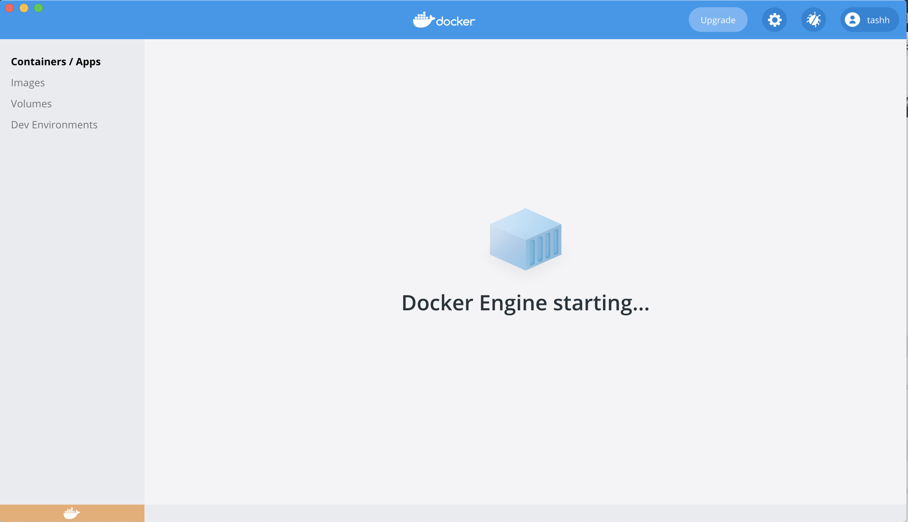

Spectre installation and getting started guide
Thomas Ashhurst, Givanna Putri
2025-09-18
Source:vignettes/Installation.Rmd
Installation.RmdInstalling Spectre
There two options for using Spectre:
- Install via RStudio. Here you can download R and RStudio, and then install the Spectre package within this framework.
- Install via Docker. Here you can download a Docker image that contains a pre-compiled installation of R, RStudio, the Spectre package, and other associated packages. This is a useful option for reproducible analysis.
In Spectre v1.1 and above we have removed the package
dependencies rgeos and rgdal as these are no
longer available on CRAN. The package should install fine without these
dependencies, but some spatial functions may not work properly. If
required, one can download the archived packages, unzip them, and then
placed them in the R library location.
Install via RStudio
Download and install the latest version of R (from CRAN) and R Studio.
There are two ways to install Spectre, using pak or
remotes package. You can try installing using
pak first, and if that does not work, you can use the
remotes package. Instructions for both are available
below.
Important: If you are unfamiliar with running R code using Rstudio, please visit our [Basics guide] section first.
Using the pak package
Run the following R code to install Spectre using the pak R package.
# Installs the package 'pak' if required
if (!requireNamespace("pak", quietly = TRUE)) {
install.packages("pak")
}
# Install the Spectre package
pak::pkg_install("immunedynamics/Spectre")When running the first command to install the pak
package for the first time, it might ask you to select which CRAN mirror
to use. Pick any mirror closest to where you are, enter the number, and
press enter.
When running the second command, Pak will show a list of dependency packages it has to install before it can install Spectre. The list may look like the following:
→ Will install 52 packages.
→ Will update 1 package.
→ Will download 49 CRAN packages (68.97 MB), cached: 4 (0 B).
+ ALL 1.48.0 👷🏼‍♂️
+ car 3.1-3 ⬇ (1.52 MB)
+ carData 3.0-5 ⬇ (1.83 MB)
+ colorRamps 2.3.4 ⬇ (28.21 kB)
+ ConsensusClusterPlus 1.70.0
+ corrplot 0.95 ⬇ (3.83 MB)
+ crosstalk 1.2.1 ⬇ (407.91 kB)
+ dendextend 1.19.0 ⬇ (5.06 MB)
+ dendsort 0.3.4 ⬇ (1.17 MB)
+ Deriv 4.2.0 ⬇ (153.06 kB)
+ doBy 4.7.0 ⬇ (4.91 MB)
+ DT 0.33 ⬇ (1.79 MB)
+ ellipse 0.5.0 ⬇ (218.52 kB)
+ emmeans 1.11.2 ⬇ (2.23 MB)
+ estimability 1.5.1 ⬇ (49.22 kB)
+ FactoMineR 2.11 🔧 ⬇ (3.82 MB)
+ flashClust 1.01-2 🔧 ⬇ (25.21 kB)
+ FlowSOM 2.14.0
+ FNN 1.1.4.1 🔧 ⬇ (130.43 kB)
+ ggforce 0.5.0 🔧 ⬇ (2.67 MB)
+ ggnewscale 0.5.2 ⬇ (355.68 kB)
+ ggpointdensity 0.2.0 🔧 ⬇ (4.37 MB)
+ ggpubr 0.6.1 ⬇ (2.13 MB)
+ ggrepel 0.9.6 🔧 ⬇ (624.15 kB)
+ ggsci 3.2.0 ⬇ (2.39 MB)
+ ggsignif 0.6.4 ⬇ (603.29 kB)
+ ggthemes 5.1.0 ⬇ (448.64 kB)
+ httpuv 1.6.16 🔧 ⬇ (2.78 MB)
+ later 1.4.2 🔧 ⬇ (786.21 kB)
+ lazyeval 0.2.2 🔧 ⬇ (162.22 kB)
+ leaps 3.2 🔧 ⬇ (104.19 kB)
+ MatrixModels 0.5-4 ⬇ (409.70 kB)
+ microbenchmark 1.5.0 🔧 ⬇ (72.58 kB)
+ modelr 0.1.11 ⬇ (203.70 kB)
+ multcompView 0.1-10 ⬇ (114.76 kB)
+ mvtnorm 1.3-3 🔧 ⬇ (1.00 MB)
+ pbkrtest 0.5.4 ⬇ (221.05 kB)
+ pheatmap 1.0.13 ⬇ (78.22 kB)
+ polyclip 1.10-7 🔧 ⬇ (440.78 kB)
+ polynom 1.4-1 ⬇ (402.59 kB)
+ promises 1.3.3 🔧 ⬇ (1.86 MB)
+ quantreg 6.1 🔧 ⬇ (1.55 MB)
+ RcppAnnoy 0.0.22 🔧 ⬇ (1.34 MB)
+ reshape2 1.4.4 🔧 ⬇ (332.09 kB)
+ rstatix 0.7.2 ⬇ (615.55 kB)
+ scattermore 1.2 🔧 ⬇ (389.60 kB)
+ scatterplot3d 0.3-44 ⬇ (348.86 kB)
+ SparseM 1.84-2 🔧 ⬇ (942.60 kB)
+ Spectre 2.0.0-00 → 1.2.0 👷🏾‍♀️🔧 (GitHub: 9bcdb3b)
+ systemfonts 1.2.3 🔧 ⬇ (7.23 MB)
+ tweenr 2.0.3 🔧 ⬇ (974.49 kB)
+ uwot 0.2.3 🔧 ⬇ (3.90 MB)
+ XML 3.99-0.18 🔧 ⬇ (1.94 MB)
? Do you want to continue (Y/n)To continue type letter Y and enter.
You should see a progress bar and messages showing the installation progress. Wait until it finishes.
Using the remotes package
If you have trouble installing using the pak package
above, you can use remotes package to do the installation
instead.
# Installs the package 'remotes' if required
if (!requireNamespace("remotes", quietly = TRUE)) {
install.packages("remotes")
}
# Install the Spectre package
remotes::install_github("immunedynamics/Spectre")R might ask you to update some packages. In general we recommend updating packages – to do this, enter 1. However, you might wish to delay this if you are in the middle of an analysis project.

Some packages may have two different versions, compiled and not compiled. Rstudio will ask whether you want to install the version that require compilation.
If you want, then enter Yes so it will download the
version that need to be compiled, compile it, then install. However
this may require extra softwares installed on your computer to run
properly.
It is ok to also enter No so it will install the version
that has been precompiled. This is often easier.
However, some packages must be compiled on your computer to run, like so:

In this case, we recommend you specify Yes and let the
computer do the compiling.
If the installation was successful, you should see something similar to the following:

Check that Spectre is installed
To check whether Spectre has been installed successfully, run the following command:
if (requireNamespace("Spectre", quietly = TRUE)) {
message("Spectre is installed")
} else {
message("Spectre is NOT installed")
}## Warning: replacing previous import 'scales::viridis_pal' by
## 'viridis::viridis_pal' when loading 'Spectre'## Spectre is installedIf you get the message “Spectre is installed”, then it has successfully been installed.
Install via Docker
Spectre is available as a Docker container, thanks to the efforts of Dr. Givanna Putri. Docker is a cloud service that allows anyone to deliver software packages as a “complete unit†in a form of container. What this means is that the software package is released as a standalone computing environment, pre-installed with necessary pre-requisite libraries required by the software, and pre-configured for user convenience. Spectre’s Docker image will match the most recent versions of Spectre (denoted as ‘master’, referring to the master branch in Github). To download this version, simply follow the instructions below. If you wish to load a specific version of Spectre, you can specify a version (e.g. v0.5.3, v0.5.4. etc) instead of using ‘master’. You can see a list of versions available via docker on this page.
Download Docker app
Go to the following address: https://www.docker.com/products/docker-desktop
Download the correct version of Docker Desktop.

Go to your downloads folder and open the ‘.dmg’ file.
When the following window opens, drag and drop the ‘Docker.app’ icon into the ‘Applications’ shortcut.
You should now be able to find ‘Docker’ in your applications folder.
Preferences (optional)
Open Docker app from the applications folder or bar at the bottom of the screen.

Once you turn it on, you should see the following icon in the bar at the top of the screen.
Additionally the program itself should open. Wait a few moments while the ‘Docker Engine’ starts.

The icon in the lower left will turn green when ready.

Click the gears icon to open ‘preferences’. Make sure you untick the options in General to mimic the screenshot below. This is to ensure Docker doesn’t start when you boot your computer, and it doesn’t share your usage data to Docker by default. Leave the automatic update checked if you prefer it to check for updates regularly.
Press ‘Apply & Restart’ when done. Close app until you would like to use it.
Launching Docker
Open the Docker app.
Wait a few moments while the ‘Docker Engine’ starts.
The icon in the lower left will turn green when ready.
Open ‘Terminal’ (on Mac, can be found in the applications folder, or the bar at the bottom of your screen).

Copy the following code into the terminal and press ENTER.
docker run --rm -e PASSWORD=spectre -p 8787:8787 -v ~:/home/rstudio/spectre_dir --name=spectre immunedynamics/spectre:masterBy default, the RStudio session that Docker will launch will be able to see everything in your Home directory and below. This is achieved in the code above using the ‘~’ symbol. If you have data elsewhere (on a server etc) you can navigate to that location using Finger and drag + drop the target directory/folder into terminal:
In terminal, add the following segments, and then hit ENTER:
docker run --rm -e PASSWORD=spectre -p 8787:8787 -v- DRAG+DROP the target folder from finder
:/home/rstudio/spectre_dir --name=spectre immunedynamics/spectre:master


Troubleshooting
If Spectre or any of the dependencies was not installed successfully, you may see some error messages like the following.
Alternatively, if Spectre was successfully installed, but when
running package.check() some of the dependencies were not
been installed correctly, you will see something like the following:
Checking dependency packages...
-- Biobase is required but not installed. Please install from BioConductor.
Check out 'https://immunedynamics.github.io/spectre/getting-started/' for help with installationIn this case, try install the offending packages independently. Note whether the packages need to be installed from CRAN or Bioconductor. Alternatively, you can report an issue on Github, ask for help on our discussion board, or email us.